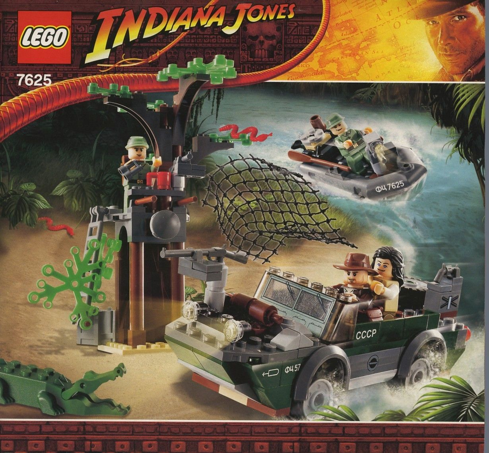

LEGO Minecraft: The Training Grounds (Review)
Dec 28, 2021
rioforce
On January 1, LEGO is set to release a new line of LEGO Minecraft sets. One notable set in that collection is 21183 The Training Grounds.
Unlike many previous Minecraft sets, this set deviates from the vanilla Minecraft design and embraces a more custom-user-based approach. That is, instead of making a set based on a generated cave, structure, or mob, the set is something that a user would have to build in Minecraft to enjoy.

So what makes it different than a regular LEGO set? LEGO Minecraft sets are primarily made of 2x2 bricks, of course! Along with that, the minifigures are blocky, as opposed to the traditional round-headed LEGO minifigures. But I assume you already knew that.
But how does this set hold up? As a build you can't find in-game, you might assume the audience is rather limited, since not as many shoppers can relate to having a ninja training base in their virtual Minecraft world. I'm also assuming that. When I saw the set, I was a bit confused as to what it was, because I have never seen anything like it related to LEGO Minecraft.
Practicality aside, the aesthetics are pretty good. Both the house on top and the cave below have decent detail. Not super detailed, though. My favorite part was probably the bedroom inside. The rest seems mostly lackluster to me.

It seems like it would be fun for a 10 year old to play with, though. I remember as a kid I would enjoy strangely sparce sets, like LEGO Indiana Jones 7625: River Chase, which is literally one side of a tree and a couple vehicles.
However, I don't think a ten year old would enjoy building this set. Despite the 8+ age rating and the functional play features, like the secret trap door in the floor, the set is extremely tedious.

Now, this could just be a side effect of the LEGO Minecraft brand. I've never built a LEGO Minecraft set before, but building this felt like I would never be able to "play" with it. Every 2x2 brick needed a top, and all the baseplates had to be put together in a special way to support the structure.
That's normal, I suppose, but the instructions weren't helping me out at all. I kept getting lost on where I was supposed to place the 30th gray 2x2 brick on the plate full of other ones. Playing spot-the-difference is by far the worst part of building a LEGO set.

So, unfortunately, I didn't enjoy the building or result of this set. Maybe my attention span is less than that of an 8 year old, but I can't imagine a child actually finishing this set to even play with it as the instructions want.
But what did I like?
The minifigures were great. I always enjoy seeing new Minecraft prints. I do have a few Minecraft minifigures, and they have cool designs! There were a good assortment of parts and weapons too. This will be happily added to my brick collection.
I also really liked the pink bricks used for the roof. I've never seen that pepto-bismol pink before, so that was a nice surprise.

I think if you're into LEGO Minecraft, or ninjas, you migt have an entirely different opinion than me on this set. You may think this set would be a great addition to your LEGO Minecraft room-sized diorama you're planning to build when your older brother moves out and you get his room. Or maybe you agree with me. Either way, thse are just my opinions! All LEGO has some value, even if the instructions and picture on the box don't provide it to you.
That's all, folks!